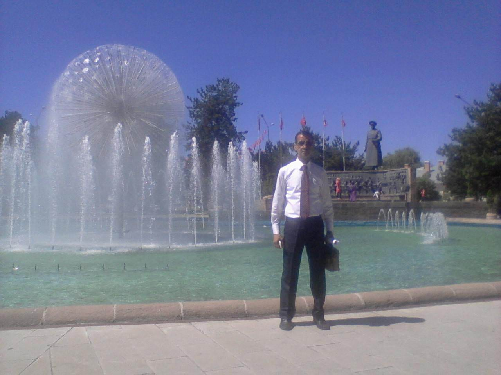

Kamu politikaları ve kamu hizmetleri alanında; toplumsal gelişmeleri, kamu kurum ve kuruluşlarının hizmet süreçlerini, vatandaşlara sunulan hizmetlerin işleyişini ve sahadaki uygulamaları araştıran, izleyen ve değerlendiren bir çalışma yürütmekteyim. Çalışmalarım kapsamında kamu kurum ve kuruluşlarının hizmet sunum süreçleri, vatandaşların hizmetlere erişimi, uygulamalarda karşılaşılan sorunlar ve geliştirilmesi gereken alanlar yerinde gözlem, araştırma, görüşme ve bilgi toplama yöntemleriyle incelenmektedir. Bunun yanında sivil toplum kuruluşlarının toplumsal hayata sağladığı katkılar, yürüttükleri çalışmalar ve kamu yararına yönelik faaliyetleri de takip edilmekte ve değerlendirilmektedir. Sahadan elde edilen bilgi, gözlem ve tespitler; ilgili mevzuat, uygulamalar ve mevcut hizmet süreçleriyle birlikte değerlendirilerek rapor, bilgi notu ve değerlendirme çalışmaları haline getirilmektedir. Tespit edilen hususların niteliğine göre ilgili kamu kurum ve kuruluşlarıyla resmî yazışma, bilgi paylaşımı ve iletişim kanalları kullanılarak gerekli bildirim ve değerlendirmeler gerçekleştirilmektedir.
Çalışmalarım; bakanlıklar, kamu kurum ve kuruluşları, yerel yönetimler, kamu hizmet birimleri ve sivil toplum kuruluşları tarafından yürütülen faaliyetleri, görev ve sorumlulukları çerçevesinde takip etmeye; sahadan elde edilen bilgi ve tespitleri ilgili mercilere ulaştırmaya ve kamu yararı doğrultusunda değerlendirmeye dayanmaktadır.
Araştırıyor, izliyor, değerlendiriyor; sahadan elde edilen bilgileri raporluyor ve ilgili mercilerle paylaşıyorum.

Bu bölüm yalnızca bir özgeçmiş değil; bugün yaptığım çalışmaların nasıl oluştuğunu anlatan kişisel bir yolculuktur.
1969 yılında Erzurum Merkez’de dünyaya geldim. Babamın Almanya’da çalışması nedeniyle annem ve bir erkek kardeşimle birlikte yaşamaya başladım. Henüz 6 aylıkken Almanya’da çalışan babamı kaybettim ve hayatıma küçük yaşta yetim bir çocuk olarak devam etmek zorunda kaldım. O dönemlerde dedemin zengin bir kasap olması ve maddi durumunun iyi olmasına rağmen bize hiçbir konuda yardım etmemesi nedeniyle, hayatın zorlukları ve sorumlulukları çocukken omuzlarıma yüklendi. Bu nedenle çocuk yaşta çalışmaya başladım. Okul hayatımın başlamasıyla birlikte hem eğitimime devam ettim hem de çalışmayı sürdürdüm. Küçük yaşlardan itibaren üstlendiğim sorumluluklar, hayatın zorluklarını erken yaşta tanımama ve kendi ayaklarım üzerinde durmayı öğrenmeme neden oldu.
Eğitim hayatımı tamamlamak için tecilim bittikten sonra 28/02/1991 tarihinde İzmit’te askerlik görevime başladım. Tümen Komutanımızın İzmir Foça’da gerçekleştirilen tatbikata katılması üzerine, kendisinin koruma göreviyle tatbikata dâhil oldum. Tümen Komutanımızın koruma görevini en iyi şekilde yerine getirmem nedeniyle, tatbikatın ardından bir ay erken terhis edilerek askerlik görevimi tamamladım. Askerlik görevimin sona ermesinin ardından memleketim olan Erzurum’a döndüm. Ülkeme ve milletime nasıl daha fazla fayda sağlayabileceğim düşüncesiyle; kamu kurumlarını, Türkiye Büyük Millet Meclisini ve siyasi partileri düzenli olarak ziyaret etmeye, çeşitli konularda bilgi edinmeye, gözlem yapmaya ve çözüm arayışlarında bulunmaya başladım. Askerlik görevinden yeni terhis olmuş, genç bir delikanlı olarak vatanıma ve milletime hizmet etme arzusu içerisinde olduğum bu dönemde, 1993-2000 yıllarında Erzurumda farklı görevler ve sorumluluklar üstlendim. Bu süreç içerisinde edindiğim deneyimler, insanlarla kurduğum iletişim, yaptığım görüşmeler ve gözlemlerim; zaman içerisinde bugün sahip olduğum çalışma anlayışının oluşmasına önemli katkılar sağladı. Daha dün gibi hatırlıyorum; ilk ziyaretimi Millî Eğitim Bakanlığına, ardından Kara Kuvvetleri Komutanlığına gerçekleştirdim. O gün yaşadığım heyecanı tarif etmek bugün bile kolay değil. 2003 yılında görev alanlarım genişledi. Çalışmalarım gereği sürekli seyahat etmem ve sahada bulunmam gerekiyordu. Temposu yüksek, ancak bir o kadar da severek yaptığım görevlerimi yerine getirirken farklı şehirleri, insanları, kurumları ve çalışma alanlarını tanıma fırsatı buldum. Aradan geçen yıllara rağmen o ilk günkü heyecanımı hiç kaybetmedim. Vatanıma, milletime ve topluma faydalı olabilme düşüncesiyle çıktığım bu yolculuğu, aynı heyecan ve sorumluluk duygusuyla bugün de sürdürüyorum.
Kamu hizmetlerinin vatandaşın günlük hayatındaki karşılığını anlamanın yalnızca masa başında yapılan değerlendirmelerle mümkün olmadığına inanıyorum.
Bu nedenle araştırma ve izlemenin önemli bir bölümünü yerinde gözlem, bilgi toplama, görüşme, değerlendirme ve raporlama oluşturmaktadır.
Amacım herhangi bir kişi veya kurumu hedef göstermek değil; tespit edilen sorunları anlamak, nedenlerini araştırmak ve mümkün olduğunda çözüm odaklı bir bakış ortaya koymaktır.
Hayatımın dönüm noktası, askerlik görevimin ardından merhum Turgut Özal, merhum Erzurum Milletvekili Muhyettin Aksak başta olmak üzere, onlarca eski bakan ve milletvekiliyle tanışmamla başladı. Bu insanlarla kurduğum ilişkiler ve gerçekleştirdiğim görüşmeler sayesinde hayatımın ve çalışma anlayışımın zaman içerisinde değiştiğini fark ettim. Üst düzey görevlerde bulunmuş değerli siyasetçileri, bürokratları ve kamu kurumlarında görev yapan yöneticileri yakından tanıma fırsatı buldum. Onların fikirleri, tavsiyeleri ve yıllar içerisinde edindikleri tecrübeler, yoluma ışık tuttu ve hayata bakışımı şekillendirdi. Bu süreçte edindiğim bilgi ve deneyimler, insanlarla kurduğum iletişim ve gerçekleştirdiğim görüşmeler; bugün sahip olduğum çalışma anlayışının oluşmasında önemli bir rol oynadı.
Babamın Almanya’da vefat etmesiyle, henüz 6 aylıkken babasız ve yetim kalarak başlayan bir hayat hikâyesi benim için çok erken yaşta sorumluluklarla şekillendi. Çocukluk yıllarımda bir yandan okuluma devam ederken, okul çıkışında siyah önlüğümü ve beyaz yakalığımı çantama koyarak çalışmaya giderdim. Gün boyu çalıştıktan sonra gece eve geldiğimde, çoğu zaman okul ödevlerimi yapacak ne enerjim ne de gücüm kalırdı. Yorgunluktan masanın başında uyuya kaldığım geceler çok oldu. Ancak sabah namazlarında erkenden uyanır, yarım kalan ödevlerimi tamamlamaya çalışır ve yeniden okuluma giderdim. Bir yandan çalışıyor, bir yandan eğitimimi sürdürmeye çalışıyordum. Yıllarım çalışarak ve eğitimimi tamamlamak için mücadele ederek geçti. Babasız büyümenin ve erken yaşta sorumluluk üstlenmenin ne kadar zor olduğunu yaşayarak öğrendim. Buna rağmen eğitimimi tamamlamak ve hayatımı kendi emeğimle sürdürmek zorunda olduğumun bilinciyle yoluma devam ettim. Çocuk yaşta öğrendiğim en önemli şey; hayatın insana her zaman kolay bir yol sunmadığı, ancak insanın karşısına çıkan zorluklara rağmen çalışmaya, öğrenmeye ve mücadele etmeye devam etmesi gerektiğiydi.
Veyisefendi İlkokulu 1975 – 1980 23 Temmuz Ortaokulu 1980 – 1983
1983-1986 Atatür Lisesi
1986-1990 Ankara Üniversitesi – Siyasal Bilgiler
Çalışma hayatım, henüz çocukluk yıllarımda, eğitim hayatımla birlikte başladı. Okula devam ederken, okul çıkışlarında çalışmaya gidiyor; bir yandan eğitimimi sürdürürken diğer yandan kendi hayatımın sorumluluklarını taşımaya çalışıyordum. Çocukluk yıllarımda başlayan bu çalışma düzeni, zaman içerisinde hayatımın ayrılmaz bir parçası haline geldi. Arkadaşlarımın okul sonrasında evlerine gittiği, bayramlarda ve tatillerde aileleriyle vakit geçirdiği dönemlerde ben çoğu zaman çalışıyor veya derslerimin başında oluyordum. Bu nedenle çocukluk ve gençlik yıllarım, yaşıtlarımdan biraz daha farklı geçti. Günün yorgunluğuna rağmen eğitimimi bırakmadım. Çalışmanın getirdiği sorumluluklarla eğitim hayatının gereklerini aynı anda yerine getirmeye çalıştım. Bazen gece eve geldiğimde ders çalışacak gücüm kalmıyor, sabahın erken saatlerinde kalkarak yarım kalan çalışmalarımı tamamlıyordum. Bu yıllar bana çalışmanın, sorumluluk almanın, sabretmenin ve sahip olduğum imkânları en iyi şekilde değerlendirmenin önemini öğretti. Çocuk yaşta edindiğim bu deneyimler, ilerleyen yıllarda insanlarla ilişkilerimde, çalışma anlayışımda ve karşılaştığım sorunlara yaklaşımımda önemli bir temel oluşturdu. Lise yıllarımda da çalışma hayatım devam etti. Atatürk Lisesi, benim için yalnızca eğitim aldığım bir okul olmadı; hayata daha farklı bakmayı, zorluklar karşısında ayakta kalmayı ve hedeflerim doğrultusunda ilerlemeyi öğrendiğim önemli bir dönem oldu. Eğitimimi tamamladıktan sonra çalışma hayatım farklı görevler ve sorumluluklarla devam etti. Farklı şehirlerde bulunmak, farklı insanlarla tanışmak, çeşitli kurumları tanımak ve farklı çalışma alanlarında deneyim kazanmak; zaman içerisinde dünyaya ve topluma bakışımı genişletti. Bugün geriye dönüp baktığımda, çocukluk yıllarımda başlayan çalışma hayatımın yalnızca geçimimi sağlamak için verdiğim bir mücadele olmadığını görüyorum. O yıllarda kazandığım deneyimler; insanları tanımamı, sorumluluk almayı öğrenmemi, sahayı gözlemlememi ve hayatın farklı yönlerini yakından görmemi sağladı. Yıllar içerisinde bu birikim, beni araştırmaya, gözlemlemeye, insanları ve kurumları anlamaya ve topluma fayda sağlayacak çalışmalar yürütmeye yöneltti. Çocuklukta başlayan çalışma hayatım, bugün kamu politikaları ve kamu hizmetleri alanında yürüttüğüm araştırma ve izleme çalışmalarının temelini oluşturan uzun bir deneyim yolculuğuna dönüştü.
1993- 2000 yılları Bölgesel çalışmalar. 2000-2003- sonrası Türkiye Geneli Kamu politikaları, kamu kurumları, kamu hizmetleri ve toplumsal gelişmeler üzerine araştırma ve izleme çalışmalarını sürdürmekteyim.
Çalışmalarım dört temel alanda şekillenmektedir.
Kamu politikalarını ve uygulamalarını araştırmak, izlemek ve değerlendirmek.
Kamu kurumlarının işleyişini ve sunduğu hizmetleri takip etmek, aksayan yönleri tespit etmek.
Sivil toplum kuruluşları ve toplumsal aktörlerle ilgili gelişmeleri takip etmek ve ilişkileri araştırmak.
Sahadan bilgi ve tespit toplamak, gelişmeleri izlemek, elde edilen bilgileri değerlendirmek ve raporlamak.
Çalışmalarımın temelini üç aşamalı bir yaklaşım oluşturur.
Konuyu farklı kaynaklardan incelemek, bilgi ve belgeleri değerlendirmek, mümkün olduğunca farklı bakış açılarını ortaya koymak.
Gelişmeleri zaman içerisinde takip etmek, saha gözlemleri yapmak ve değişimleri kayıt altına almak.
Elde edilen bilgileri karşılaştırmak, sorunları ve gelişme alanlarını belirlemek ve sonuçları değerlendirmek.
Benim için araştırma yalnızca bilgi toplamak, izlemek yalnızca gelişmeleri takip etmek değildir. Asıl önemli olan; bilgiyi anlamak, doğru değerlendirmek ve gerektiğinde doğru yere aktarabilmektir.